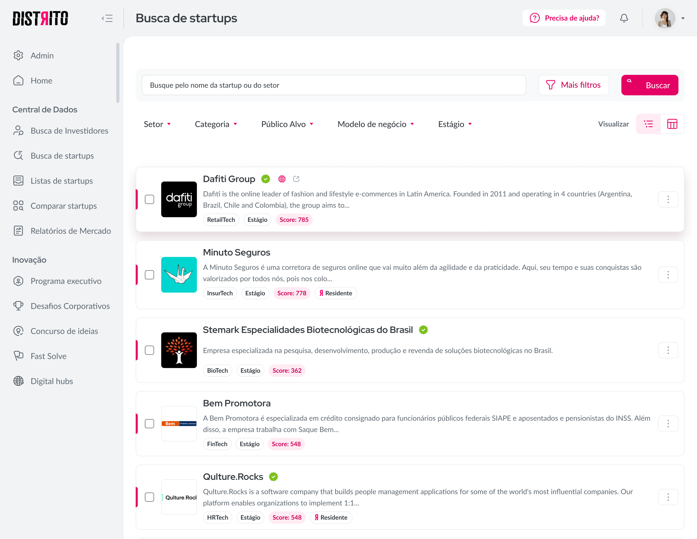
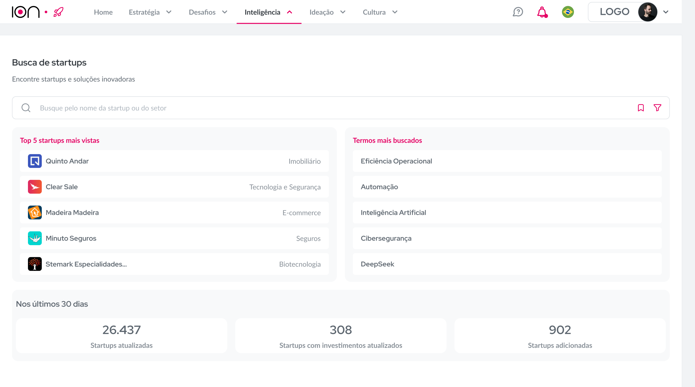

O Busca de Startups é a principal ferramenta do SaaS do Distrito. A empresa possui o maior banco de dados de startups da América Latina, e essa feature existe para possibilitar uma pesquisa aprofundada nesse banco. A questão é que o nosso então CEO nos fez a seguinte pergunta: "Por que a nossa feature de maior valor dentro da empresa não tem despertado interesse nos nossos usuários?" e os números confirmavam, 60% das pesquisas iniciadas não eram concluídas.
Guiei a revitalização da sua página inicial, que possuía fricções desnecessárias, jornadas mal pensadas e uma alta carga cognitiva para o usuário.

Nosso principal objetivo era claro: tornar a pesquisa fácil e intuitiva e para isso, começamos pelo início, entendendo o usuário. Depois de diversas pesquisas (workshops com stakeholders, survey com usuários ativos e lost users, entrevistas 1:1, benchmarks e análise de dados), chegamos à conclusão que a quantidade de informações presentes na tela de início (uma vez inseridas com a ideia de complementar a busca) mais confundiam e frustravam o usuário do que de fato o ajudavam.
Não deveríamos reinventar a roda, muito pelo contrário, ferramentas de pesquisa são, quiçá, o recurso mais antigo da internet. Por que não usar as já bem aceitas como base? Tivemos a intenção de manter essa ação no imaginário comum, por isso os protótipos desenvolvidos nesse projeto tiveram forte influência em soluções usadas pelo Google, Chat GPT e até o buscar do Instagram.
Com um caminho bem traçado — mapeado em wireframes, jornadas e em uma matriz de priorização por impacto x esforço —, diminuímos a quantidade de insumos iniciais e focamos a atenção do usuário no que realmente era importante nessa tela: a busca. Os filtros e salvamentos foram mantidos, mas tendo um peso secundário na experiência. Criamos sugestões de pesquisas para ajudar àqueles que não tinham uma certeza de por onde começar e adicionamos informativos das atualizações do banco de dados. Ações mais avançadas ficaram "camufladas" para os usuários casuais, mas continuam acessíveis para os power users.
Em três meses de implementação, os resultados do redesign eram notáveis. Os usuários gerais da plataforma aumentaram, o número de pesquisas completas cresceu, a taxa de turnovers na ferramenta diminuiu e 30% das pesquisas passaram a ser feitas através das sugestões. Fizemos um acompanhamento com os stakeholders e a mudança foi muito bem recebida, praticamente ressucitando a ferramenta.

"Os scouts do time voltaram a ser feitos pelo Busca."